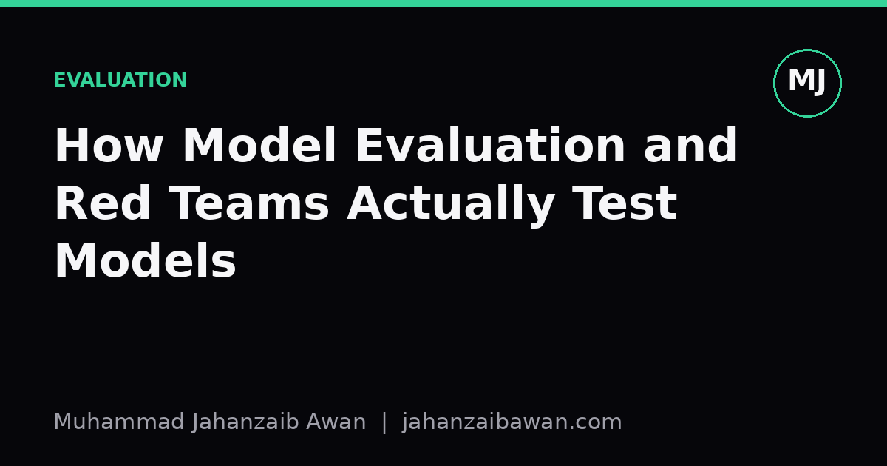

How Model Evaluation and Red Teams Actually Test Models
Behind every headline safety claim sits a messy process of threat modelling, adversarial probing and leakage-aware measurement. Here is how that process actually works.

Why this is harder than it looks
When people hear that an organisation has 'tested' a model for safety or capability, they tend to picture a single exam: a fixed benchmark, a score, a pass or fail. The reality is much closer to how you would stress test a bridge. You do not just drive one lorry across it and call it done. You model the loads it will actually face, you probe the joints that are most likely to fail, and you keep testing after small changes because a fix in one place can quietly break something else. Model evaluation organisations work the same way, because a single benchmark score tells you almost nothing about how a system behaves outside the narrow conditions under which that score was produced.
The core difficulty is that models are not static objects with fixed properties waiting to be measured, they are highly context sensitive systems whose behaviour shifts with phrasing, prompt structure, temperature, and even the order in which examples appear. A model that refuses a harmful request when asked directly might comply when the same request is wrapped in a fictional frame or split across several turns. So the first job of a serious evaluation team is not running tests, it is deciding what 'the model's behaviour' even means before you can claim to have measured it.
This is why threat research groups spend so much time on threat modelling before touching a single prompt. They ask who would realistically try to misuse this system, what they would be trying to achieve, and what resources and patience they would plausibly have. A nation state actor with months of effort available is a different threat to a bored teenager with twenty minutes, and testing only for the second gives you false confidence against the first. Good evaluation starts by writing this down explicitly, because it is the only way to know later whether your test suite actually covers the risks you claim to be managing.
Designing tests that resist gaming
Once the threat model is clear, the next problem is leakage, and it is more subtle than people assume. The obvious form is a model having seen the exact test questions during training, which is bad enough and does happen when benchmarks are scraped into web corpora. But there is a quieter version: a model can perform well on a benchmark simply because it has learned the surface statistics of that benchmark's style, not the underlying skill the benchmark was designed to measure. A reading comprehension test where the answer is almost always the longest option, or a safety test where harmful requests are always phrased in a recognisably 'test-like' way, can be solved by pattern matching the test format rather than by actually being safe or competent.
Serious evaluation teams guard against this with holdout sets that are never published, with paraphrasing and rewriting of prompts to break surface patterns, and with periodic refreshes of test items so that a model cannot simply memorise last year's set. Imagine a benchmark for detecting manipulative persuasion techniques in text. If every example that contains the word 'urgent' is manipulative in the training data, a lazy classifier will learn that shortcut and score well without understanding persuasion at all. A competent evaluator deliberately includes benign examples that use urgent language and manipulative examples that avoid it, specifically to catch models that are gaming the keyword rather than solving the task. This is tedious to build and it is exactly the kind of unglamorous work that separates a trustworthy evaluation from a flattering one.
Red teaming adds a different layer on top of this. Where benchmarks test known categories of failure, red teams try to find failure categories nobody has written a test for yet. A red team exercise might start with a hypothesis, say that a model's safety training is stronger on English than on other languages it supports, and then design probes specifically to test that gap: the same harmful request translated, back translated, or mixed with code switching, to see whether the refusal behaviour holds. When it does not, that finding becomes a new, concrete test case that gets folded back into the permanent evaluation suite, so the next model version is checked against it too. This is how evaluation suites grow over time, not by someone sitting down and imagining every possible failure in advance, but by accumulating real discovered failures and institutionalising them as regression tests.
Why statistics and reporting matter as much as the probes
Finding a worrying behaviour is only half the job; reporting it honestly is the other half, and this is where a lot of public discussion goes wrong. If a red team tries one thousand adversarial prompts and finds that thirty succeed in producing harmful output, the headline number that matters is not just thirty, it is thirty out of one thousand under a specific, documented set of conditions: which model version, which system prompt, which decoding settings, which definition of 'harmful' was used to judge the outputs. Change any of those and the number moves, sometimes a lot. A rate that looks alarming at temperature 1.0 with no system prompt might look very different at temperature 0 with a safety-focused system prompt in place, and a responsible write-up states both rather than quoting whichever number tells the better story.
This is also where confidence intervals and sample size matter in a way that is easy to skip over. Thirty failures out of one thousand trials is a rate of three percent, but if the sample was only fifty trials, three failures is six percent with a much wider margin of uncertainty, and the difference between those two framings genuinely changes what a reader should conclude. Evaluation organisations that take this seriously report not just the headline rate but the number of trials behind it, and they are explicit about whether failures were found by automated classifiers, which can themselves be wrong, or by human review, which is slower but more reliable for ambiguous cases.
The practical takeaway for anyone reading or producing evaluation results is to treat a bare percentage as the start of a question, not the end of one. Ask what the threat model was, whether the test set could have leaked into training, whether the probes were adversarially refreshed or reused from a public benchmark, and what exact conditions produced the number being quoted. If those details are missing, the evaluation has not actually told you how the model behaves in the wild, it has told you how the model behaves on one narrow slice of one specific test, under one specific setup, and that is a much smaller claim than it sounds.